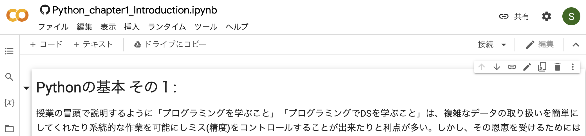

Google Colaboratoryの使い方¶
Note
以下の内容は、Google Colaboratoryや関連サービスのアップデートに伴い、数ヶ月経つとところどころ文言が変更されている場合があります。適宜対応するものに置き換えて読んでいただけると助かります。
Note
Macユーザーの人は適宜下記のコントロールキーCtrlをcommand(⌘)キーに読み替えてください。
Google Colaboratory上でノートブックを開くと、下記のような画面が開く。(上のOpen in ColabまたはロケットマークからColabを開いてみよう!)

この画面が開いたときに、右上にお使いのGoogleのアカウントのアイコンが表示されている人はそのまま以下へ、”ログイン”というボタンが表示されている人はまずそちらからご自身のアカウントにログインしてください。 授業ではプログラミングの強力さを体感してもらうために、Google Driveの中に入っているcsv/excelファイルを読み出して自動で作画をするプログラムを書いたりする。 その際、教員やTAと受講者間でdriveを見ながら相談することもあり得る。プライベートなアカウントとは別に、大学の授業で使う専用のアカウントを新規作成するのを強く推奨します。
Google Colaboratory(あるいはJupyterNotebook)環境ではユーザーは
テキストセル
コードセル
の２つを駆使して、自分だけのノートブックを作成したり、他者が作成した.ipynb形式のファイルを開いて編集したりプログラムを実行することができる。
テキストセル¶
[+テキスト]というボタンを押すとテキストセルを追加することができます。
テキスト部分への数式の挿入¶
Jupyter Nootebookでは\(\LaTeX\)形式の数式をサポートしていて、ドルマークで囲むと数式を表示させることもできます。
\(f(x) = \frac{1}{2}\exp{(-2x^2 + 3x + 5)}\)
コードセル¶
[+コード]というボタンを押すか、特定のショートカットCtrl + M Bでコードセルを追加することができる。
コードセルに記述したPythonコードは、コードセルにマウスオーバーした際に現れる再生ボタンのようなアイコンをクリックするか、セル内でCtrl+Enterを押すことで実行ができる。
実行のたびにいちいちマウスに手をやるのは面倒なので、是非ショートカットを使おう。
この例に限らず、手の移動を最小限にすることで作業を楽にしたり押し間違いを防ぐこともできる。
アプリケーションにあまり依らない共通のショートカット(Ctrl+S(⌘+S)は保存,Ctrl+W(⌘+W)はタブを閉じる, などなど)ので少しずつショートカットを覚えるようにしよう。
コードセルにはコメントを除いて、全角文字は使わないように意識しよう。 全角スペースなどが気づかずに混入して、エラーの原因になることがよくある。
重要な注¶
ブックから開いたノートブック
は、皆さんがコピーをするなどしない限り、実行はできても保存はできません。
Warning
必ず、[ドライブにコピーを保存]ボタンか、[ファイル]->[ドライブにコピーを保存]を押し、”ご自身のファイル”を編集・保存するようにしてください

上の画像のように、ノートブックのファイル名の横にGitHubのロゴ(タコ足猫)が表示されている場合、
皆さんが開いているのはGitHubからインポートされたノートブックであって、皆さん自身のファイルではありません。
途中でうっかりタブやブラウザを閉じてしまうと作業内容が消えてしまいます。
私も一連の講義資料作成時にGitHubから開いたノートブックを直接編集して数時間分の作業内容を消してしまったことが何度もあります…。辛いです。
コピーを編集している場合は、左上のノートブック名の隣がGoogle driveのロゴになっているはず。
この場合、編集されたものはGoogle Driveに一定時間で自動でバックアップされるので安心ですし、いつでもどの端末からでも開いて作業を再開することができます。
WindowsならCtrl+ S, MacならCommand + Sを押すことで随時Google Driveにバックアップを保存することができます。
誤った内容に編集してしまった場合もGoogle Colaboratoryの”最終編集: X月Y日”といったところやGoogle Drive上でファイルの上で右クリック→”版を管理”から復元することができます。
なんか挙動が変だな、と思ったら。¶
複数のセルにまたがるコードを実行していくうちに変数に意図しないものが入っていたりなんか変だな、挙動が怪しいな、と思ったら[ランタイム]や[編集]などから下記の操作を行ってみましょう。
セルの実行を停止したい場合: [ランタイム]→[実行の中断]で中断 (or [セッションの管理]から不要なセッションを削除する)
再起動したい場合: [ランタイム]→[ランタイムを再起動]
出力をいったん全部消したい: [編集]→[出力をすべて消去]
Google Driveからファイルのインポート¶
Google Colaboratoryでは、Google Driveに保存されたファイルの内容を読み込んだり、逆にコードでテキストファイル,エクセルファイルや画像,音声などを作成しGoogle Driveに保存することができます。
お使いのアカウントのDriveをGoogle colab.から操作する方法は主に2通りあります。
1つめ:
以下を実行し、出てくるURLに遷移
authorization codeをコピーし枠内に貼り付けてEnterを押す
(Google colabからgoogle driveのファイルにアクセスできるようになります)
from google.colab import drive
drive.mount('/content/drive/') ##google driveを/content/という場所にマウント (２番めと整合するようにパスを選びましたが、マウントする場所は自由に選べます)
たとえばgoogle drive直下にあるXXX.pngというファイルを指定したい場合は
filename = "/content/drive/My Drive/XXX.png"
とすれば良い。
2つめ:
Google Colabの左側にあるフォルダマークをクリックし、(「ファイルのブラウジングを有効にするには、ランタイムに接続してください。」と出る場合は、少し待ってください)
次に、Google driveのロゴがついたフォルダをクリックする(画像の、[ファイル]というところの右下にある、driveのロゴがついたグレーがかったフォルダマーク)
この場合は自動で/content/driveという場所にマウントされるので(仕様が変更になる可能性あり)
google drive直下にあるXXX.pngというファイルを指定したい場合はやはり
filename = "/content/drive/My Drive/XXX.png"
などとすれば良い。
また、driveを一度マウントした後でパスがわからなくなったときには左の[ファイル]からdriveに相当するフォルダにマウスオーバーして縦3点\(\vdots\)から[パスをコピー]で、パスをクリップボードにコピーすることができます。
シェルコマンドとドライブ内のファイルのパス¶
Google Colab.では先頭にエクスクラメーションマークをつけることで
ls (リスト,ファイル等表示)
mkdir (ディレクトリ作成)
などのLinux/Unixで用いられるコマンドを実行することもできる。
たとえばGoogle Driveをマウントした後にマイドライブ直下にあるpng画像のリストを表示させたければ
!ls /content/drive/MyDrive/*.png
とすればよい。 なお、半角のアスタリスクはワイルドカード記号「対象を任意に」という命令になっている。